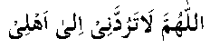
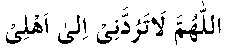

‘Amr bin Jamooh (RA) was lame. He had four sons, who often remained in the company of Nabi (Sallallahu Alayhi Wasallam) and took part in many battles. In Uhud, Amr (RA) desired to join the battle.
People said to him:”You are excused, as you are lame. You need not go to the battle.”
He replied: “How sad that my sons go to Jannat and I stay behind.”
His wife also wanted him to fight and get martyred, so that she might have the honour of being the widow of a martyr. To encourage him, she said to him: “I do not believe that people have stopped you from going. It seems that you are yourself afraid to go to the battlefield.”
Hearing this, Hadhrat ‘Amr (RA) equipped himself with weapons and, facing Qiblah, prayed to Allah Ta’ala:

“O, Allah! Let me not come back to my family again.
He then went to Nabi (Sallallahu Alayhi Wasallam) and said: “I had always wished for martyrdom, but my people have always been stopping me from going to the battlefield. O, Nabi of Allah! I cannot hold back my desire any more. Do permit me to join the battle. I hope to walk in Jannat with my lame foot.”
Nabi (Sallallahu Alayhi Wasallam) said to him: “You have an excuse. There is no harm if you stay behind.”
However he still insisted, and at last Nabi (Sallallahu Alayhi Wasallam) allowed him to fight. Hadhrat Abu Talha (RA) says: “I saw ‘Amr (RA) fighting. He walked proudly and said, ‘By Allah! I am fond of Jannat’. One of his sons was following him at his heels. The father and the son fought till both of them were killed.
His wife, on hearing of the death of her husband and son, came with a camel to fetch their bodies. It is said that when the bodies were loaded on the camel, it refused to stand up. When it was made to stand up after great beating, it would not go to Madinah and would turn towards Uhud, again and again. When Nabi (Sallallahu Alayhi Wasallam) was informed of this, he said: “The camel is commanded to do that. Did ‘Amr (RA) say anything at the time of leaving his home?”
His wife informed Nabi (Sallallahu Alayhi Wasallam) that he had prayed to Allah Ta’ala, facing Qiblah:

“O Allah! Do not return me to my family”
Nabi (Sallallahu Alayhi Wasallam) said: “This is why the camel is refusing to go towards his home.”
Look at Hadhrat ‘Amr’s (RA) desire to die in the path of Allah Ta’ala. It was their love and devotion for Allah Ta’ala and his Nabi (Sallallahu Alayhi Wasallam) that led the Sahaabah (RA) to the height of success. Even after his death, ‘Amr (RA) wanted to remain in the battle-field and therefore the camel refused to take his body back to Madinah.